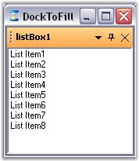

The DockToFill property allows users to implement a very unique docking layout where a non-MDIContainer form or ContainerControl's entire client region is occupied by the dockable controls.
|
DockingManager Property |
Description |
|
DockToFill |
Sets the boolean value indicating whether the docked control occupies the form's full client region. |
|
[C#]
this.dockingManager1.DockToFill = true; |
|
[VB.NET]
Me.dockingManager1.DockToFill = True; |

Figure 91: DocToFill Enabled
A sample which demonstrates DockToFill property is available in the below sample installation path.
..My Documents\Syncfusion\EssentialStudio\Version Number\Windows\Tools.Windows\Samples\2.0\Docking Package\WindowFill
FreezeResizing
The FreezeResizing property has been implemented for each control by which, the end users can freeze any particular control. Also, the property value can be persisted. A global FreezeResizing property is also available using which all the controls can be frozen.
The controls can also be frozen by calling the SetFreezeResizing method which freezes the specified control and the user will no more be able to resize the controls.
|
Parameter |
Description |
|
SetFreezeResizing |
Freezes the specified control. The parameters are,
Ctrl - The control for which docking is enabled. freeze - Represents a boolean value which decides whether to freeze the specified control. |
|
[C#]
this.dockingManager1.FreezeResizing = true; this.dockingManager1.SetFreezeResize(this.panel1, true); |
|
[VB.NET]
Me.dockingManager1.FreezeResizing = True Me.dockingManager1.SetFreezeResize(Me.panel1, True) |
A sample which uses FreezeResizing property is available in the below sample installation path.
..My Documents\Syncfusion\EssentialStudio\Version Number\Windows\Tools.Windows\Samples\2.0\Docking Package\SDIDemo
See Also